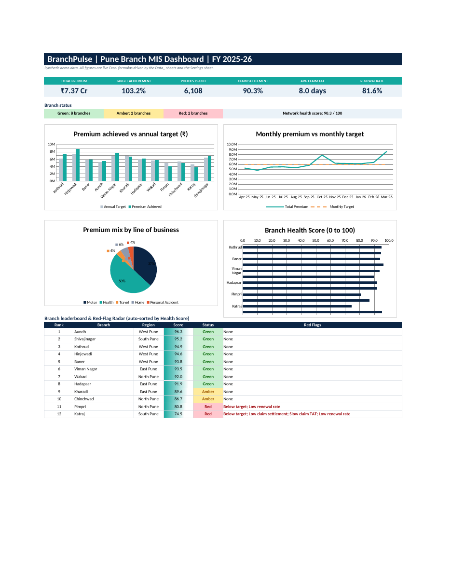
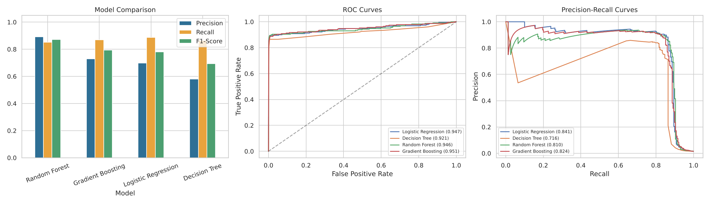
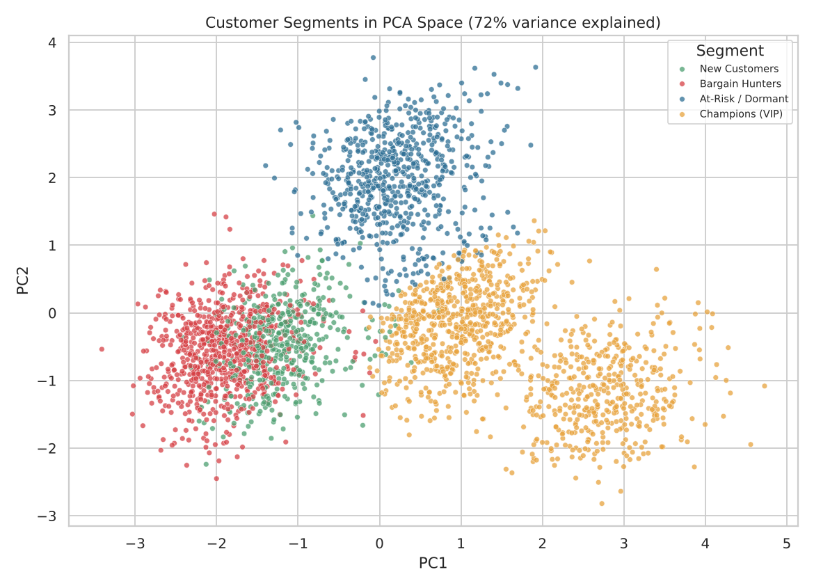

Transforming Complex Data into Decisive Insights.
Blending an academic background in English (critical analysis, structured expression, stakeholder storytelling) with a Post Graduate in Analytics (Python, SQL, Power BI, Machine Learning & Automation). I turn noisy, disparate datasets into executive-ready dashboards, predictive models, and self-operating MIS workflows.
Bhagyashree Ghosh
Data Analyst & ML Practitioner
MIS Automation
12 Branches in 1 Click89% Precision
Card Fraud DetectionThe Intersection of Storytelling & Analytics
Most data projects fail not at the algorithm, but at the communication layer. My dual background bridges technical rigor with executive clarity.
I hold a Bachelor's degree in English, which built a permanent foundation in critical thinking, structured logic, and articulation. During my studies, I discovered a fascination with how mathematical evidence and data patterns solve high-stakes business challenges.
To formalize this passion, I completed the intensive Post Graduate in Analytics (PGA) program, mastering Python, SQL, Power BI, Advanced Excel formulas, and Machine Learning algorithms.
In addition, my year of teaching and mentorship with an educational NGO sharpened my ability to distill complex analytical architectures into intuitive, punchy takeaways that non-technical leaders immediately understand and act upon.
🎯 What I Bring to Your Team
From diagnosing raw CSV inconsistencies with automated Data Quality Gates to training fine-tuned classification models and designing executive Power BI dashboards, I deliver reliable, reproducible business outcomes.
End-to-End Data Pipelines
From messy CSV ingestion, SQL querying, and automated data quality audits to live formula-driven Excel workbooks and reports.
Practical Machine Learning
Solving real-world constraints: severe class imbalance (SMOTE), threshold optimization, clustering (K-Means/PCA), and Time Series forecasting (SARIMA/LSTM).
Executive Communication
Clear documentation, automated email digests, and interactive dashboards that translate statistical variance into bottom-line business decisions.
Technical Skillset & Tools
A balanced toolkit designed for full-lifecycle data analytics, machine learning, and business intelligence.
Python for Data Science
Data wrangling, automated scripts, custom ETL pipelines, statistical modeling, and ML workflows.
SQL & Databases
Relational schema design, complex multi-table joins, CTEs, window functions, and aggregation pivots.
Power BI & Visualization
Executive BI reporting, interactive cross-filtering, DAX measures, data modeling, and spatial heatmaps.
Advanced MS Excel
Dynamic multi-sheet formula architectures that recalculate automatically on new data ingestion.
Machine Learning
Supervised and unsupervised algorithms, class imbalance handling, threshold tuning, and feature importance.
Time Series & Deep Learning
Temporal lag engineering, seasonality decomposition, moving averages, and recurrent networks.
Featured Case Studies & Projects
Real-world analytics pipelines engineered with clean code, robust validations, and proven business metrics.

Automation & MISBranchPulse: Branch MIS Automation System
Automated Monday-morning MIS reporting pack across 12 insurance branches with dynamic Excel formulas, automated Data Quality Gate (76 audit issues handled), and executive email generation in one command.

Machine LearningCard Fraud Detection ML Pipeline
Trained Random Forest and Gradient Boosting models on a 1.5% imbalanced fraud dataset. Optimized precision-recall threshold curve to achieve 85% fraud capture with only 0.16% false positive rate.

Clustering & AnalyticsCustomer Segmentation & Behavioral RFM
Segmented 3,000 customers into 4 distinct commercial personas using K-Means clustering, PCA dimensionality reduction, and Elbow/Silhouette analysis to guide targeted marketing retention.
EV Charging Demand Forecasting
Spatial-temporal forecasting of EV charging demand across 4 operational zones using 365 days of data. Engineered rolling and lag features to compare SARIMA, Random Forest, XGBoost, and LSTM neural networks.
Chicago Crime Prediction & Power BI Dashboard
Capstone analytics platform evaluating citywide historical incident logs to predict temporal-spatial crime frequency and deploy an interactive multi-view Power BI dashboard for proactive public safety dispatch.
Heart Disease Clinical Risk Scoring
Supervised classification model trained on 319,795 CDC BRFSS patient records to estimate heart disease risk across 18 demographic and lifestyle predictors using Logistic Regression (LBFGS) with odds-ratio analysis.
Live ML Decision Threshold Simulator
Experience how adjusting the classification probability threshold directly shifts business trade-offs between catching fraud and minimizing customer friction.
Fraud Model Decision Optimizer
Based on our 60,000 transaction dataset (229 actual fraud cases in test set)
Education & Experience Journey
How a passion for language and structured logic evolved into high-performance data analytics.
Post Graduate in Analytics (PGA)
Comprehensive training and project defense in end-to-end analytics pipelines, predictive modeling, SQL database querying, Power BI dashboard architecture, and time-series forecasting. Successfully delivered Capstone 1 (Chicago Crime Spatial Analysis) and Capstone 2 (EV Demand Forecasting).
Educator & Community Mentor
Facilitated learning modules, breaking down complex conceptual frameworks into accessible, intuitive lessons. Cultivated advanced stakeholder presentation, patience, and empathetic communication—skills that directly elevate technical business intelligence delivery.
Bachelor of Arts (Honors) in English
Developed exceptional verbal and written articulation, argument structure, rhetorical analysis, and critical reading of intricate texts. This background provides an uncommon advantage in distilling quantitative models into persuasive executive narratives.
Recognitions & Key Achievements
Dual Capstone Defense
Successfully researched and defended two end-to-end enterprise capstones spanning Power BI spatial analytics and EV demand hybrid forecasting.
High-Imbalance ML Precision
Engineered an 89% precision fraud detection model with 85% recall on a severe 1.5% fraud distribution without test data leakage.
76+ Automated Quality Gates
Designed and deployed automated reconciliation rules and audit trails across multi-branch insurance operations.
1+ Year NGO Mentorship
Recognized for educational impact and teaching clarity, translating difficult concepts into easy-to-grasp insights.
Let's Discuss Opportunities
Whether you have an open Data Analyst or ML role, a data project, or just want to connect, my inbox is always open.